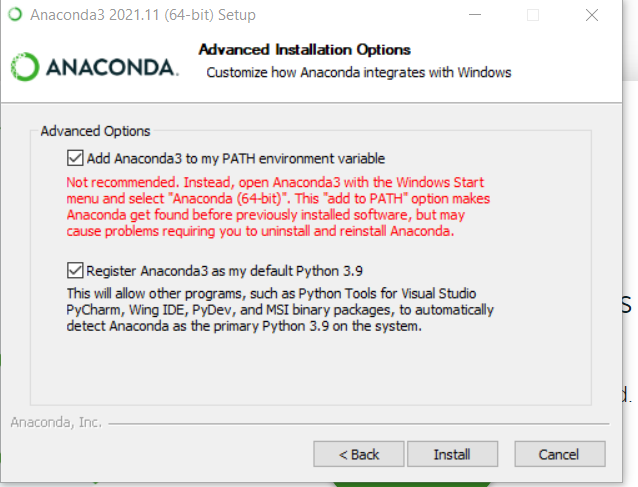

If the images below are not visible:please clone repo and then open this file in your web browser.
Installation Overview
These steps should take ~30-90 minutes, depending on the speed of your machine and internet connection.
By the end of this chapter, you will:
Install GitHub Desktop,
Install Anaconda (Python).
Create a special Python environment (dojo-env)
Supercharge Jupyter Notebooks with Extensions
Install Visual Studio Code.
Note: if you previously installed the dojo-env are upgrading to the new one, please see the "Updating to New dojo-env at the end of this chapter.
For several steps, there are multiple versions of the instructions, depending on what operating system you are using.
(i.e. a Windows computer, vs a Mac with an Intel processor, vs a Mac with an Apple Chip (m1/m1pro/m2/etc).)
For step 1, please make sure you are on the correct instruction page for your OS.
Regardless of OS, you will be using tools that serve the following purposes:
Your "Terminal"/"Shell":
The primary application you will use to execute coding-related commands.
A Python Distribution:
The fundamental infrastructure for installing Python.
GitHub Desktop:
App for working with and managing git repositories.
Our custom Python Environment (dojo-env)
A bundle of packages required for stacks 1-5+
Jupyter Notebooks / Jupyter Lab
The primary editor we will use (instead of Colab).
Visual Studio Code
A special text editor designed for code. It has many extensions and languages available.
We will use it to edit special files, but it can also run notebooks too!
Scroll down to the bottom of this page for the recording of the Python Installation Lecture from 04/14.
If you encounter an error during installation:
First, read a little further down in the instructions to make sure we do not already address the error message that you ran into.
Second, reach out on your Discord channel to the TAs and/or your instructor
Third, if you do not receive a response by the end of the day on Discord, please email jirving@codingdojo.com
Python Installation Video Recording
Note: the recording below is showing the steps for installing dojo-env version 1. The steps are basically the same but the video does not cover the additional steps required to install the newest version of dojo-env on a Mac with an Apple chip (m1,m2,etc)
1. Downloading and Installing Required Apps
Before we install our python environment, we need to take care of a couple requirements.
In step 1, we will install:
Your "Terminal"/"Shell":
The primary application you will use to execute coding-related commands.
A Python Distribution (Anaconda/miniforge):
The fundamental infrastructure that will allow us to install Python.
GitHub Desktop:
The way we will work with git repositories and the starting point for our local workflows.
There are different instructions for step 1, depending on your operating system.
Please make sure you are on the correct version of step 1 before following the
instructions:
Step 1 - Windows
Step 1 - MacOS (Intel Processor)
Step 1 - MacOS (Apple Chip)
Note for Mac users - if you don't know which type of Mac you have :
Check the "About this Mac" screen for your computer.
Click on the Apple symbol on the top-left corner of your screen.
Click About This Mac.
A window with your computer's specs will appear like the one in the screenshot below
If it has a "Processor" line that says "Intel" you should follow the instructions for
MacOS (Intel Processor)
If it has a "Chip" line that says "Apple" then follow the instructions for MacOS (Apple
Chip)
Step 1 - MacOS (Apple Chip)
Preface: Good News and Bad News
So...you got one of those shiny new(ish) Mac computers with Apple chip, eh? We've got some good news and
bad news for you.
The good news:
Your python code will run blisteringly fast compared to a Mac with an Intel chip!
Code that may take hours elsewhere will only take minutes for your computer.
The bad news:
Your instructions for Tool #3 below (the Python Distribution) are going to be very different
than the other operating systems.
Additionally, there are still packages that have not yet been updated to be compatible with your
processor.
But don't worry: everything that is in the other OS's dojo-env is also in yours!
Just a heads up if you go to install a new package and run into issues.
STEP # 1 INSTRUCTIONS:
Note: steps for Tools # 1 and 2 are the same for Mac users with an Intel processor.
Tool #1: A Linux-based bash shell/terminal:
Linux users and MacOS users have this built-in to their OS.
On MacOS, the shell is called "Terminal" and can be found
in Applications>Utilities in Finder
OR you can use spotlight search and search for "Terminal".
Note: Here is where the instructions for Apple Chips will significantly deviate from the
others.
The primary difference is that in order for us to use Apple-Chip compatible versions of
packages (like TensorFlow), we CAN NOT use the standard Anaconda distribution.
There is a lightweight alternative to Anaconda, called miniforge, that will install much of the
same foundations as Anaconda, but with access to alternative versions of
packages that are optimized for Apple Chips.
Note/Warning: you would still be able to install Anaconda if
you tried, but your computer will never be able to run TensorFlow if you
use Anaconda. So please, take our word for it that it is worth following our alternative
instructions
The following instructions are based on this
blog post, should you wish to review it in-depth.
Tool #3: Python Distribution - miniforge
Tool # 3 will involve several steps with several verification steps along the way. Make sure to follow each Step and
Verification step below to ensure you have a problem-free python installation.
Step 1: Install XCode (a Mac-specific developer toolkit from Apple)
Run the command below in your Terminal.
Note: this step may take several minutes
You may be asked to enter your password to approve the installation. This is your normal user
password to log into your computer.
xcode-select --install
Step 2: Install Homebrew ( a database of downloadable apps/tools for Mac)
You may be asked to enter your password in your terminal.
This is the same password you use to log into your mac.
Enter your password when prompted and hit Enter.
NOTE: You will not be able to see what keys you have typed, so just trust that it is recognizing
your keystrokes and hit enter. It will notify you if the password was incorrect.
The installation process will pause and ask you "Press RETURN to continue or any other key to
abort".
When it does, press Return/Enter!
Step 2B: CRITICAL NOTE
When homebrew has finished installing, it may display a message telling you to run 1 or 2 commands in
your Terminal.
It is very important that you run those commands, otherwise, your terminal will
not know that homebrew has been installed.
Step 2 Verification:
Confirm that homebrew was successfully installed:
Open a New Terminal Window (shortcut: Cmd+N or Cmd+T) and run the "brew" command.
If it lists available commands, great!
You're all set to move forward.
If it says brew not found,
You may have missed the commands to paste at the end of the homebrew installation.
Try installing homebrew again and make sure to pay attention to the final text that's displayed
and follow any additional instructions it displays.
Step 3: Install miniforge using homebrew.
Pre-Step 3 Verification:
VERIFY THAT ANACONDA HAS NEVER BEEN PREVIOUSLY INSTALLED ON YOUR COMPUTER BY ANY
USER.
Open a terminal window and run the "conda" command (without quotation marks).
If it says conda not found, great!
You're ready to install miniforge.
If it shows a list of available conda commands:
You MUST FOLLOW THE APPENDIX INSTRUCTIONS AT THE BOTTOM FOR "Uninstalling
Anaconda"
CRITICAL NOTE:
IF YOUR TERMINAL RECOGNIZED THE CONDA COMMAND ANACONDA MUST BE REMOVED BEFORE
INSTALLING MINIFORGE.
Failure to heed this warning will break all of your python environments and it is NOT easy to fix!!!
Step 3 Commands:
Enter the brew installation command below in your terminal:
brew install miniforge
Once miniforge has finished installing, run the following command in your terminal (required for
Matplotlib):
brew install pkg-config
Post-Step 3 Verification
Open a new terminal window and enter the "conda" command.
If it lists available commands, fantastic!!
You are all set to move on to the next page of instructions "2. Setting Up Your
dojo-env Environment"!!
If it says conda not found, try restarting your computer and then try running the conda command again.
If it still says conda not found, reach out to your instructor or a TA for help ASAP.
If your computer already knew the conda command during "Pre-Step 3 Verification", it is critical that you remove
anaconda before continuing with the miniforge installation.
Pre-Uninstallation Verification Step:
If you share your computer with another User who also uses Python:
Pause here and check with them BEFORE you uninstall anaconda. You will be removing
all of their python environments too, even though they have a separate User account.
If you share your computer with someone and they have concerns about uninstalling
anaconda:
Stop here (for now).
Do not move forward with the instructions until you have spoken with your instructor.
Your instructor may be able to address concerns that your fellow User has and convince them to
let you install miniforge.
Alternatively, you could follow the Step 1 - MacOS (Intel Processor) instructions instead but:
Your python code will run slower than it would with miniforge.
You will not be able to import tensorflow without your kernel crashing.
Your instructor may be able to address concerns that your fellow User has and convince them to let you install
miniforge.
Use the default options, EXCEPT when you see the "Advanced Installation Options" window (like
in the screenshot below).
Select "Add Anaconda3 to my Path environment variable". Disregard the warning message will appear in red
text.
BOTH options should be checked, like in the screenshot below:

You are all set to move on to the next lesson "2. Setting Up Your dojo-env Environment"
Step 1 - Windows
Tool #1: A Linux-based bash shell/terminal:
Windows users should install GitBash, instead of using the windows command prompt
Otherwise, all of the commands for working with your terminal will not match the curriculum and other
cloud-based platforms (like Amazon Web Services).
Note: for a list of the equivalent commands for Windows command prompt see this cheat
sheet.
Use the default options, EXCEPT when you see the "Advanced Installation Options" window
(like in the screenshot below).
Select "Add Anaconda3 to my Path environment variable". Disregard the warning message will appear in red
text.
BOTH options should be checked, like in the screenshot below:
Tool #3 - Verification: Making sure GitBash Knows "conda"
Windows users may need to take an additional step to get anaconda and GitBash working together.
Open GitBash from your start menu.
Enter the command conda and press enter.
If you see a list of available conda commands, great!
You are all set to move on to Step 2: "Setting Up Your dojo-env"
Disregard the final section below that says "Adding Conda to GitBash"
If you see a message that says: "bash: conda: command not found", then follow the instructions
below under "Adding Conda to GitBash"
Adding Conda to GitBash:
Note: the instructions below are adapted from this Blog Post
Once you have installed anaconda, use File Explorer to Open Your User folder. (Windows key +E
is shortcut for File Explorer)
This is the folder that contains your Desktop, Downloads, My Documents, and other user-specific files.
Example: Users/your_name/
If you're having trouble finding your user folder:
Go to This PC in File Explorer, and then double click on your C drive.
Then double click the Users folder and then click on the folder that corresponds to your
windows username.
Inside your user folder, you should see a folder named "anaconda3" (note: not the hidden folder
called .anaconda that starts with a .). Double-click the folder to open it.
Yous should see a folder named etc inside the anaconda3 folder. Open
it.
You should see a folder called profile.d folder inside the etc. Open it.
You should see a conda.sh file in this folder
(Note: depending on your setting in File Explorer, it may not show the .sh and may just
show "conda".
Right-click somewhere in the "profile.d" folder and select "Git Bash Here".
From the GitBash window that opens:
Enter the command pwd and hit enter and examine the file path that's displayed
If the file path displayed ends with profile.d then are in the right folder!
If not, restart the "Adding Conda to GitBash" instructions again and make sure you can find
your profile.d folder.
Reach out to your instructor or a TA if you are still having issues.
Next, Enter the following command and hit enter:
echo ". '${PWD}'/conda.sh" >> ~/.bashrc
Open a new GitBash window and enter conda again.
You should no longer get the "bash: conda: command not found" error message!
Reach out to your instructor or a TA if you are still having issues.
You are all set to move on to the next lesson "2. Setting Up Your dojo-env Environment"
and you are logged into the SAME account in the GitHub Desktop app (that you installed
in step 1.)
Click on the green Code button and then click
Open in GitHub desktop.
GitHub desktop should open automatically and ask you what
folder you would like to store your repository in.
Troubleshooting Note: if you are brought to the Download GitHub Desktop web page
instead:
It means you were not logged into the same account on GitHub.com and
GitHub Desktop when you clicked Open in GitHub Desktop.
Make sure you see your user profile pic in the top right of GitHub.com
and check your Account in GitHub Desktop's Preferences/Options menu.
and then try again.
By default, GitHub Desktop will use a new "GitHub" folder in your Documents
folder
GitHub Desktop will create a NEW folder with the same name as the repository
INSIDE of whichever folder you select.
If you use the default options, then this will create a "dojo-env-setup/" folder
inside of "Documents/GitHub/"
Note: it is strongly recommended that you use the Documents/GitHub folder for this
repository.
But if you'd rather save the folder somewhere else:
Use the "Choose" button (the button name may be "Browse" on Windows).
A window should pop up for you to find and click on the folder where you want to
create the "dojo-env-setup" folder.
Once you have selected a new folder using the Browse button, you should see the
full folder path displayed.
IMPORTANT STEP: Make sure to remember the full file path of the folder
you selected! (See the screenshot below. )
Step 2.2: Open the Repo in Terminal/GitBash
Open the Repo in Terminal (mac) or GitBash (windows)
Once you have cloned the repository, you will need to open a terminal/gitbash window in the same folder as the
repository.
Open a new terminal in the dojo-env-setup folder
First, in GitHub Desktop: make sure the left sidebar says "dojo-env-setup" in the top-left corner under
Current Repository.
Click on the Repository menu and select "Open in terminal" or
"Open in gitbash"
Windows Users: the menu will be at the top of GitHub Desktop's window.
Mac Users: the menu will appear at the very top of your screen (your menu bar).
Alternatively, you can use the keyboard shortcut to do the same thing. The command for both Mac
and Windows is:
Control + ` (the key above tab that also has the tilde symbol ~)
In the terminal window that appears, type the "pwd" command (stands for print working directory)
and press Enter.
It will display the folder name of the folder your terminal is currently located.
The folder path should end in "dojo-env-setup/"
If you used the default GitHub folder when you cloned dojo-env, the full filepath would be
something similar to "/Users/yourname/Documents/GitHub/dojo-env-setup/"
Troubleshooting (Windows):
If you are having trouble getting GitHub desktop to open GitBash in the correct folder there are 2 solutions
for getting your gitbash window in the dojo-env-setup folder.
Solution #1: Using File Explorer +
Right Click
If you followed the instructions in step 1 and used the default options when installing Git for
Windows/GitBash, you should have a new option in your Right-Click menu that says "GitBash here".
In GitHub Desktop click the Repository menu again and select "Show in File
Explorer".
Once file explorer opens, right-click anywhere inside the folder (right-click on
empty space, not on a file) and select GitBash here.
A GitBash window should open in the correct folder.
Type pwd to confirm that you are indeed in the dojo-env-setup folder.
Solution #2: Open a new GitBash and navigate to the right folder.
If you do not have the option to "GitBash here", you can manually navigate there in GitBash.
Open the windows start menu, find and click on GitBash to open a new window.
Important Note: You must know the full file path for the repo for the next step. We will
refer to as <repo_filepath> in the instructions below.
if you used the suggested default folder when cloning the repo, your
repo_filepath should be:
But instead of <your name> it will be your actual user name for
your computer
If you are not sure what your username is, run the "whoami" command in your
GitBash to see your user name.
If you did NOT use the suggested default folder,
Your repo_filepath will be the path displayed in the window that appeared when you
cloned the repo.
You should have taken note of the file path you selected, as indicated in
the screenshot.
Once you know what your repo_filepath is navigate to that folder using the change directory
command (cd)
"cd <repo_filepath>".
See the examples below:
## Examples are assuming your username is "codingdojo"
# Example if you used default folder:
cd /Users/codingdojo/Documents/GitHub/dojo-env-setup/
# Example if you used a different folder. e.g. you made a Boot Camp Stuff folder in your Documents folder.
cd /Users/codingdojo/Documents/Boot Camp Stuff/
Verify Step 2.2
Run one last command to verify that you are indeed in the correct folder.
Run the "ls -a" command to see a detailed list of all files in the repo.
ls -a
You should see a list of all the files in the current folder.
If you are in the right folder, you should see 3 files that start with "environment" and end with ".yml"
like in the screenshot below.
If so, you are all set for the next step: create the dojo-env environment!
Step 2.3 Create the dojo-env environment
Identify the correct environment file for your computer
Depending on your OS and processor, you will use a different environment file name in your "conda create"
command.
In the table below find the environment yml file name that is correct for your computer/OS.
Reminder for Mac Users: see Lesson 1. Downloading and Installing Required Apps to remember how to
identity if you have an Intel processor or an Apply chip.
## General Format of the command to create env (but replace <env_file> with filename from table below
conda env create -f <env_file>
Computer/OS Type
Environment File Name
Windows
environment_windows.yml
MacOS with an Intel Processor
environment_mac_intel.yml
MacOS with an Apple Chip (m1, m1pro, m2,etc)
environment_mac_mchip.yml
Create the dojo-env using "conda create"
After you've identified the right environment for your computer, run the "conda env create -f
<env_file>".
## Env Creation Commands by OS
# Windows
conda env create -f environment_windows.yml
# Mac - Intel Processor
conda env create -f environment_mac_intel.yml
# Mac - Apple Chip
conda env create -f environment_mac_intel.yml
Wait (patiently) for the dojo-env to be created.
It can take anywhere from 3-20 minutes to finish create the environment,
depending on your computer and internet connection.
You will see several progress bars during the process. Once it has been completed you should see a
message that says
# To activate this environment use:
$ conda activate dojo-env
# To deactivate this environment use:
$ conda deactivate"
Confirm your environment was installed and activate it.
Type conda env list to display the list of your locally installed environments.
You should see 2 environments, including dojo-env:
base
dojo-env
If you see dojo-env in the list:
Success! dojo-env was successfully created! But we aren't using it yet just yet. We must first
"activate" an environment to determine which version of python & packages are currently being
used.
Activate the dojo-env
Run the conda activate command to switch to dojo-env.
conda activate dojo-env
You should now see "(dojo-env)" next to your prompt in your terminal (may be above the prompt, on the left, or
on the right depending on your OS)
Troubleshooting for Windows users:
If you see a message that says "your terminal is not set up for conda activate", you will use a slightly
different command to activate your environment. Replace the word "conda" with "source".
source activate dojo-env
Add dojo-env to jupyter notebook/lab
After confirming you now see (dojo-env) displayed next to your prompt:
Run the following command to make sure Jupyter Notebook/Lab knows your new environment.
You are all set for the next step: Testing Your New Environment!
Step 2.4: Testing the Environment
To test that your installation and packages are working properly. We are going to run a specific Environment Testing
notebook that is also located in the "dojo-env-setup" folder.
Running the environment tester notebook with jupyter notebook
From the same terminal window, start jupyter notebook (run jupyter notebook in
your terminal)
A new tab should open in your web browser that shows the File view for jupyter notebook.
You should see all of the files that were in the dojo-env-folder.
There are 2 "EnvironmentTester" notebooks:
"EnvironmentTester-mac.ipynb" for macs (both Intel and Apple Chip macs)
"EnvironmentTester-windows.ipynb" for Windows.
Click on the test notebook for your OS to open it.
Once the notebook interface has loaded, you should see a toolbar with several menu choices.
We want to run all of the cells in this notebook and confirm it can make it to the end without errors.
To Run the Entire Notebook:
Select the "Kernel" Menu > "Restart and Run All"
Wait patiently. The testing notebook is going to run through several modeling and
EDA steps to confirm that the packages are working correctly.
This could take anywhere from 2-10 minutes to run.
You will see the web browser tab icon turn to an hourglass when the notebook is running and back
to an orange notebook icon when it is done.
Scroll down to the bottom of the notebook and confirm the cells have run:
Check if the very last cell printed the success message.
If the entire notebook ran successfully
Congrats! Your dojo-env is fully functional and you can move on to the next step/lesson!
If your notebook did not run the entire notebook successfully:
You need to contact your instructor or a TA
for assistance.
Before contacting them, please follow the instructions below to prepare the troubleshooting files to
give to your instructor.
To Get Help Troubleshooting Your Environment.
There are 2 files that you should share with your instructor/TA
A copy of your Environment Tester notebook that error'd.
A copy of "FINAL_REPORT.txt" file that is in the Troubleshooting folder of the repo.
To share your notebook with an instructor/TA for help:
Click File > Save & Checkpoint.
Click File > Download As > Notebook (.ipynb)
Your web browser should save a copy of the notebook to your normal "Downloads" folder.
To share a copy of your FINAL_REPORT.txt:
In the first Files tab that opened when you started jupyter notebook you should see a folder called
"Troubleshooting"
Click on the Troubleshooting folder.
Inside the folder you should have a file called "FINAL_REPORT.txt".
Check the checkbox next to the file and click on the "Download" button that appears at the top of
the list of files.
Your web browser will also save this file to your Downloads folder.
Now, boot up jupyter notebook and look for a new tab called (nbextensions) on the jupyter
file-explorer view. If its there, great! Move on to the "Turning on extensions" section below.
Activating Specific Extensions:
When you boot up jupyter notebook, there should be a new tab at the top called
nbextensions. Click on the tab to open the list of available extensions.
This opens a menu of all of the available extensions with checkboxes to activate them;
NOTE: If the list of available notebook extensions is grayed out like the screenshot below:
Uncheck
"disable configuration for nbextensions without explicit compatibility (they may break your notebook environment, but can be useful to show for nbextension development)"
at the top of the page next to the search box.
To enable the recommended extensions:
Click on the checkbox next to the extensions name to activate the extension.
To change the settings for an extension:
Click on the name of the extension to select it. Now, if you scroll down, you should
see the list of options for the currently selected extension.
Note: any extensions that you enable or settings that you change are automatically
saved.
Recommended Extensions & Settings
The following section will walk you through each of the recommended extensions and their recommended settings.
Brief Summary of Extensions to Enable
Table of Contents (2)
Collapsible Headings
Live Markdown Preview
Ruler
spellchecker
1. Table of Contents (2):
Clickable sidebar with markdown headers as bookmarks/links.
Recommended options:
Uncheck Automatically number notebook sections
Change Maximum level of nested sections to display on the tables of contents to 3.
Check Display Table of Contents as a sidebar (otherwise as a floating window)
Check
Collapse/uncollapse ToC sections when the collapsible_headings nbextension is used to collapse/uncollapse sections in the notebook. For the inverse behaviour, see collapsible_headings' configuration
2. Collapsible Headings
Collapse sections of your notebook using markdown headers.
Recommended options:
Check 'Collapse/uncollapse notebook sections when the ToC2 nbextension is used to collapse/uncollapse
sections in the table of contents. For the inverse behaviour, see ToC2's configuration' at towards the
bottom of the options.
3. Live Markdown Preview
Shows a preview of what the markdown cell you are editing will look like once you render it with Shift+Enter
Recommended options:
Check
Show the input & output of markdown cells side-by-side while editing them.
4. Ruler (not Ruler in Editor)
Adds a vertical red line in code cells at 80 characters. Python code should not cross this line (to match
Python's style guide)
Settings:
No settings to change.
5. spellchecker
Checks markdown cells for spelling and highlights words in red that
are misspelled. Note: it cannot correct misspelled words, only highlight them.
Confirming Extensions are Enabled
Go back to the Files tab and create a new notebook with the New button on the
top-right.
Select Python(dojo-env) for your kernel
Once your new Untitled notebook opens, you will notice a few new elements to the
interface:
First, confirm that you have two new buttons on your toolbar:
One that looks like a list (this is your table of contents extension)
One that looks like a checkmark (this is your spellchecker)
Second, confirm that you see a red dashed line in your code cell. (the Ruler extension)
Third, click on the button for the table of contents (the one that looks like a list).
An empty sidebar should appear on the left.
Fourth, change your code cell to a markdown cell.
You can click on the dropdown menu on your toolbar that currently says "code".
Change this to Markdown.
In the markdown cell, type the following text but do NOT run the cell yet.
# TEST HEEDER (misspelled on purpose).
Confirm that you see a preview of your markdown text off to the right.
this is your Live Markdown Preview extension.
Confirm that the word "HEEDER" is highlighted in red.
This is your spellchecker.
Finally, run the cell "Shift+Enter" and confirm:
that the header appears in the table of contents on the left.
that a dropdown arrow appears to the left of the header in the notebook.
You may notice that the ToC automatically numbered the header and added 1 next to
Test Heeder.
If you prefer to disable this, click on the small gear icon next to the word Contents:
In the menu that appears, uncheck "Automatically number headings"
Now you are all set with your Jupyter Notebook extensions! Onto the final step 5. Install a Code
Editor - VS Code.
2. Setting Up Your dojo-env Environment
Step 2 Overview:
In Step 1, we installed the foundational tools needed for our local python installation.
While we did install a Python distribution with a basic copy of Python (Anaconda or miniforge), we have
not installed all of the packages and tools that we need as data scientists.
In Step 2, you will be creating a custom python environment called "dojo-env".
An "environment" is a bundle of specific python packages that are used together.
Importantly, an environment specifies specific version #'s of the packages to ensure that all of the
versions installed are mutually compatible.
You can install many environments on your computer and switch between them as needed
for different projects.
We have designed the dojo-env to include everything you'd need for our program, so you
may not have a reason to add additional environments.
Currently Supported Operating Systems
We have prepared environment files (.yml files) for 3 different OS configurations:
Windows (10 & 11)
Mac (with Intel processors)
Mac (Apple Chips).
Reminder for mac users:
Please revisit the "1. Downloading and Installing Apps" lesson if you are not sure which type of
mac you are using.
Note to Linux Users:
Sorry Linux users! A Linux machine was not available for testing during the development of the
dojo-env.
If you are willing to work with an instructor to develop and test a Linux version of dojo-env, contact
your instructor or send an email to jirving@codingdojo.com requesting assistance in create a linux
version of dojo-env.
The Detailed Instructions below will guide you through how to clone and use the environment setup
repository.
Brief Summary of the Following Steps:
Step 2.1: Clone the dojo-env-setup repository
Step 2.2: Open the repo in your terminal/GitBash
Step 2.3: Create the dojo-env environment
Step 2.4: Setting dojo-env as your default.
Step 3: Install a Code Text Editor
Visual Studio Code
The final tool to install is a text editor that is designed for programmers.
There are several text editors available, but we will be using Visual Studio Code.
Visual Studio Code (A.K.A "VS Code") is a free editor that is highly
customizable and supports many languages.
It is maintained by Microsoft and has a robust community of extensions and add-ons.
It is very popular and is used by many companies (e.g. Facebook/Meta)
How will we use VS Code?
We could technically run all of our jupyter
notebooks using VS Code, but this is not recommended at this point in your education
.
While VS Code is convenient for quickly opening and working with a repository or viewing a
notebook, it has some limitations in how notebooks look and some quirks to the interface for
notebooks.
Instead, we will focus on using jupyter notebook or jupyter lab in the lessons and live
class.
You are welcome to try VS Code for notebooks, but it is recommended you become
comfortable with jupyter first.
We will use VS Code for editing simple code files or hidden files.
We can open and edit the settings file for your terminal (e.g.:
"~/.bash_profile".or "~/.zshrc"
We will use it to create and store credentials for APIs (Stack 4)
We can use VS Code to edit your projects' README files while previewing them in real time!
Finally, while beyond the scope of the standard curriculum, we can also use VS Code to store functions
in external files that we can use just like pandas, matplotlib,
Click on the "Install" button for the Python extension.
Note: the Python extension will also install several required extensions. When installation is complete, you
should see the following under the "INSTALLED" section:
Python, Pylance, Jupyter Notebook renderer, Jupyter, and Jupyter Keymap
Setting VS Code to use your dojo-env as the default Python installation
We must teach the Python extension where to find our dojo-env's version of Python.
On the extension sidebar, click on the Gear icon for the Python extension and select "Extension Settings"
You should see a new "Settings" pane open in the main window.
Take note of the "Default Interpreter Path".
It is currently set to just "python".
We need to change this setting to match the exact filepath for our dojo-env's python.
In your terminal or GitBash:
Make sure your dojo-env is activated
Run the command: which python
It will print out a filepath to your dojo-env.
Copy and paste that exact file path into the "Default Interpreter Path" field in the Python extension
settings.
Mac Users Only: Add the code command to your terminal
We want to be able to type the word "code" in our terminal and have that open up VS Code.
Windows users have this command added automatically during installation.
Mac Users must run 1 more command from VS Code.
Open the Command Palette:
Either click on View in the menu bar and select "Command Palette"
OR use the keyboard shortcut (Cmd + Shift +p)
In the small pop-up window, type "install code" and you should see it auto-suggest the option for "Shell
Command: Install 'code' command in PATH".
Click on this option.
Test the code command
Open a new terminal or GitBash window.
Run the command code to verify that VS Code opens.
Note: You can add a specific folder or filename to open, after the word code.
To open the current folder code .
If it opens, great!
If not, make sure you've opened a new terminal window AFTER installing the code command.
Congratulations! You are all set up with your local python environment! You may
want to read the Final Notes + Appendix lesson so that you are aware of the contents, in case you need
them.
Final Notes
Congrats! You've got a fully functional professional data science environment on your local machine!
Please see the next chapter "Working Locally" for:
a walkthrough of how to use your new local installation and tools together
a summary of terminal commands
jupyter notebook chgeat sheets
how to install additional packages
& more!
Please see the "Troubleshooting" chapter for commonly encountered errors and any known solutions.
including:
Reinstalling your dojo-env
"code" command not working
GitBash "Could not fork child process" error
Updating to New dojo-env
If you have already installed your dojo-env and wish to update to the new version, you must first remove the
current dojo-env from your computer.
Note: the new version of dojo-env was released in July 2022. If you installed your
environment in July or later you already have the updated dojo-env.
The benefits of upgrading to the new dojo-env:
New sklearn v1.1 with simplified column transformer feature names!
Jupyter Lab added
New Packages and Tools Included:
nbdime: Version control for jupyter notebooks.
Model Explainer Packages (SHAP, Lime, Yellowbrick)
IMPORTANT NOTE FOR MAC USERS WITH AN APPLE CHIP (M1, M1Pro, M2, etc)!
The original v1 of dojo-env did not fully support Apple processors, but the new dojo-env does. HOWEVER, in order to
do so, Mac users with an Apple chip need to UNINSTALL ANACONDA and switch to using
Miniforge.
Please see Step 1 - MacOS (Apple Chip) for detailed instructions on how to uninstall anaconda and install miniforge.
Step 1: Remove Your Old dojo-env
Open your terminal/GitBash
Deactivatedojo-env:
Type conda activate base (or source activate base if you are on older
versions of windows)
Your terminal should now say (base) next to your prompt instead
of (dojo-env).
Remove the old dojo-env using the command:
conda remove --name dojo-env --all
Enter y to approve the removal of the environment
and hit enter.
4. Wait for the env to be removed.
This will delete all of the files associated
with JUST our dojo-env.
Anaconda & GitBash will still be
installed. We will just need to re-install our dojo-env
Step 2: Clone the updated dojo-env-setup repo
To avoid merge conflicts when pulling the updated repository, you should remove your old clone of
the dojo-env-setup repo and then clone it again.
In GitHubDesktop, switch to the dojo-env-setup repository in the Current Repo drop down menu (top
left). Once you're in dojo-env-setup, click on the "Repository" menu and select "Remove" > check Move
to Trash/Recycle Bin.
Click the green Code button and select "Open in GitHub Desktop. "
If you still have your previously cloned copy, GitHub Desktop should show a # and down arrow on the top
right corner where it should say "Fetch Origin".
Press the button to "Fetch Origin", which will download the updated environment files.
You may need to press it again if it changes to "Pull Origin"
If you've updated the repo successfully there should be no remaining #'s or arrows on the top right
corner.
If so, click on the Repository menu > Open in Terminal (or Open in GitBash).
Step 3: (Re)Create Your dojo-env using the updated repo
Run the same commands from the original step "2. Setting Up Your dojo-env Environment"
(summarized below).
If you are unsure about which version of the summary instructions below to use, please go to the
original Step 2 lesson for your specific OS and follow those steps again.
"Step 2: Setting Up Your Dojo-Env" Summary:
Depending on your OS and processor, you will use a different environment file in the conda env create
command.
In the table below find the environment yml file name that is correct for your computer/OS.
Note: Whenever the instructions below refer to your <ENV_FILE> below, it means the filename from the following
list (without < >).
Computer/OS Type
Environment File Name
Windows
environment_windows.yml
MacOS with an Intel Processor
environment_mac_intel.yml
MacOS with an Apple Chip (m1, m1pro, m2,etc)
environment_mac_mchip.yml
Make sure you are still using a terminal inside the folder for the dojo-env-setup (pwd)
Run the following command (replace <ENV_FILE> with your filename from the table above)
conda env create -f <env_file>
Wait (patiently) for the dojo-env to be created.
Note: the new environment includes many additional tools and can take anywhere from 3-20 minutes to
finish downloading and installing the packages for the new environment.
Once its complete, run the following "conda activate dojo-env" command:
conda activate dojo-env
Note for windows users:
if you see a message that says "your terminal is not set up for conda activate", change the
command to "source activate"
source activate dojo-env
You should now see "(dojo-env)" next to your prompt in your terminal (may be above the prompt, on the left, or
on the right depending on your OS)
After confirming you now see (dojo-env) displayed next to your prompt:
Run the following command to make sure Jupyter Notebook/Lab knows your new environment.
From the same terminal window, start jupyter notebook
(run jupyter notebook in your terminal)
Open the test notebook for your OS (windows vs mac).
EnvironmentTester-Mac.ipynb or EnvironmentTester-Windows.ipynb
Select the Kernel Menu > Restart and Run All.
The notebook should run all the way to the end.
If it doesn't, contact your instructor for assistance.
Bonus: Jupyter Lab
Your new dojo-env also includes jupyter lab. It is very similar to jupyter notebook, but has a more fleshed out user
interface that is more similar to Colab than jupyter notebook.
## 1. Deactivate dojo-env
conda activate base
# Windows users may need to use "source activate base"
## 2. Remove dojo-env
conda remove --name dojo-env --all
# press y to confirm
## 3. Create new environment
# run ONE of the following (depending on you computer)
conda env create -f environment_mac_mchip.yml
conda env create -f environment_mac_intel.yml
conda env create -f environment_windows.yml
## Wait patiently, once completed, activate new env
conda activate dojo-env
# windows users may need "source activate dojo-env"
## Add dojo-env kernel to jupyter
python -m ipykernel install --user --name dojo-env --display-name "Python (dojo-env)"
## Boot up jupyter notebook
jupyter notebook
# OR If you previously follwed "3. Setting dojo-env as your default"
jnb
## Read Final step below code cell
Final step: Open and run the appropriate environment testing notebook for your OS:
"EnvironmentTester-mac.ipynb"
"EnvironmentTester-windows.ipynb"
Notify a TA or instructor if the notebook does not successfully run ALL cells.